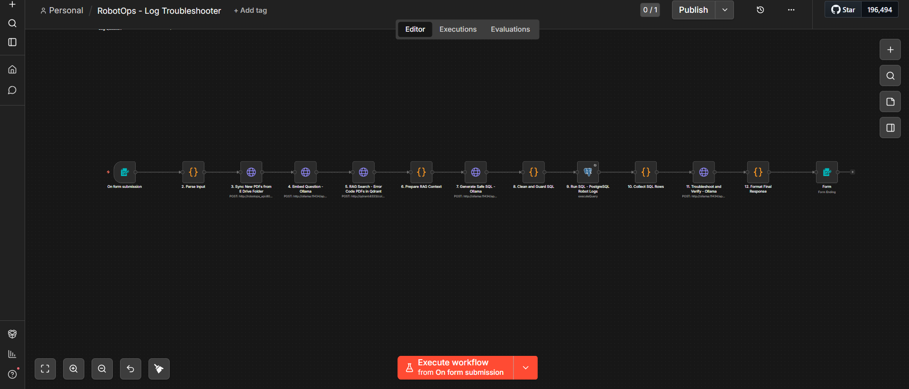

PROJECT 01 · AGENTIC AI
RobotOps Troubleshooting Agent
n8n · Docker · RAG · Local LLMs
An AI agent that reads robot failure logs, retrieves relevant error-code and maintenance context with RAG, and generates evidence-based root-cause troubleshooting reports. Combines PDF parsing, text chunking, local embeddings, vector search, and guarded Text-to-SQL over a PostgreSQL log store — with LLM verification and an extension path to Jira-ready incident tickets.

Click to zoom